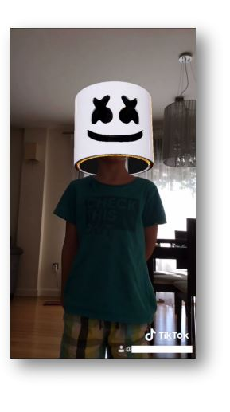

TIKTOK COMO HERRAMIENTA
INNOVADORA EN EL AULA.
APLICACIONES EN EL ÁREA DE DLL
Eugenio Maqueda Cuenca*, Andrea Felipe Morales*
y David Caldevilla Domínguez**
*Universidad de Málaga y **Universidad Complutense de Madrid
ÍNDICE
- Introducción
- Nuestra propuesta
- Nociones básicas sobre TikTok
- TikTok en las clases de Lengua y Literatura
- Conclusiones
Bibliografía
1. Introducción
- Las nuevas tecnologías han conseguido democratizar la elaboración y
difusión de contenidos.
- Los jóvenes han dejado atrás el papel pasivo de meros receptores de
historias, para convertirse también en emisores de las mismas, en
prosumidores
-
Búsqueda de admiración y reconocimiento, ansia de crear y de formar
parte de una comunidad del ciberespacio.
-
La creatividad se nutre en experiencias y emociones.
-
Las distintas herramientas tecnológicas han cambiado radicalmente ese
espacio comunicativo y las prácticas narrativas.
-
Mediante las metodologías emergentes se está tratando de superar la
brecha existente entre el profesor y el alumno en el aprendizaje
tradicional.
2. Nuestra propuesta

Este trabajo pretende ofrecer distintas posibilidades
para mejorar e innovar en nuestra docencia en el área
de Didáctica de la Lengua y Literatura, implementado
actividades realizadas mediante la red social TikTok.
Así, partiendo de la explicación del funcionamiento y
características de TikTok, abordaremos aspectos del
currículo de Lengua y Literatura que pueden ser
explicados a través de esta app de manera más
efectiva, motivadora, activa y cercana a la realidad de
los discentes.
2. Nuestra propuesta
2. 1. Nociones básicas sobre TikTok
- TikTok es una aplicación móvil para los sistemas IOS y Android diseñada para
crear y compartir vídeos cortos (de 3 a 60 segundos) con el smartphone.
- Las descargas que se han realizado de la misma se acercan a los mil millones.
- Permite utilizar música, insertar texto, grabar también la voz, jugar con la
velocidad de composición y los efectos de cámara y ofrece la posibilidad de
que los espectadores puedan grabar sus reacciones ante los vídeos.
- La interfaz es bastante simple y muy intuitiva, y permite búsquedas,
visualizaciones y creación de contenidos.
- Para los niños y jóvenes, usar TikTok es una mezcla de entretenimiento,
querer ser conocidos y tener fans, realizar retos y poder comparar las
creaciones propias con las de los demás, estar en contacto con sus amigos/as
y pertenecer y desenvolverse dentro de una cibercomunidad.
2. Nuestra Propuesta
2. 2. TikTok en las clases de Lengua y Literatura
- Ejemplos de contenidos que pueden aprenderse mediante TikTok:
- Funciones del lenguaje (función fática, referencial, metalingüística,
conativa y poética).
- Estudio de la narración como género literario (elaboración de una
historia, estructura de una narración, diálogos, ritmo, voces
narrativas…).
- Representación teatral.
- Textos publicitarios.
3. Conclusiones
Como hemos evidenciado, el uso didáctico de la tecnología de los
smartphones mediante la aplicación TikTok supone grandes beneficios para la
docencia 2.0. en el aula de Lengua y Literatura, puesto que ésta despierta la
motivación y el interés en los discentes –que viene determinada por la inequívoca
presencia de esta red social en sus espacios de ocio y entretenimiento
personales–, y abre un abanico de contenidos lúdico-discursivos y lingüísticos
factibles de ser enseñados a través de un aprendizaje envolvente, creativo y
activo. Mediante propuestas como la presentada, el teléfono móvil podría dejar
de ser en clase ese objeto prohibido y requisado, para llegar a convertirse en un
aliado del docente, un cómplice de enseñanzas.
Bibliografía
- Anyó, Ll. (2014). Los videojuegos y la comunicación audiovisual. En P. Requeijo y C. Gaona
(Coord.), Contenidos innovadores en la universidad actual (pp. 75-84). Madrid: McGraw-Hill.
- Aran-Ramspott, S., Fedele, M. y Tarragó, A. (2018). Funciones sociales de los youtubers y su influencia en
la pre adolescencia. Comunicar: Revista Científica de Comunicación, XXVI (57), 71-80.
- Del-Moral, M. E., Bellver, M. C. y Guzmán-Duque, A. P. (2019). Evaluación de la potencialidad creativa de
aplicaciones móviles creadoras de relatos digitales para Educación Primaria. Ocnos, 18(1), 7-20.
- Fernández Torres, M. J. y Chamizo, R. (2016). Nuevas formas de comunicación en el siglo XXI: Los
youtubers. En M. Linares, J. Díaz y M. E. del Valle (Eds.), Innovación universitaria: digitalización 2.0 y
excelencia en contenidos (pp. 253-269). Madrid: McGraw-Hill.
- García-Ruiz, R., Bonilla-del-Río, M., y Diego-Mantecón, J. M. (2018). Gamificación en la Escuela 2.0: una
alianza educativa entre juego y aprendizaje. Gamificación en Iberoamérica, 71-95.
- Jakobson, R. (1960). Linguistics and poetics. En T. Sebeok (Ed.), Style in language (pp. 350-377). MA: MIT
Press.
- enkins, H., Purushotma, R., Weigel, M., Clinton, K. y Robison, A. J. (2009). Confronting the Challenges of
Participatory Culture: Media education for the 21st century. A John D. and Catherine T. MacAr- thur
Foundation Occasional Paper on Digital Media and Learning. Chicago: MacArthur Foundation.
- Mañas, S. y Peña, V. (2014). Narrativas videojugables: ludificación del relato audiovisual. En P. Requeijo y
C. Gaona (Coord.), Contenidos innovadores en la universidad actual (pp. 443-451). Madrid: McGraw-Hill.
- Rego, S. y Romero-Rodríguez, L. M. (2016). Representación discursiva y lenguaje de los' youtubers'
españoles: Estudio de caso de los' gamers' más populares. Index. comunicación: Revista científica en el
ámbito de la Comunicación Aplicada, 6(1), 197-224.
Muchas gracias
Eugenio Maqueda Cuenca
maqueda@uma.es
Andrea Felipe Morales
a.felipe@uma.es
David Caldevilla Domínguez
davidcaldevilla@ccinf.ucm.es